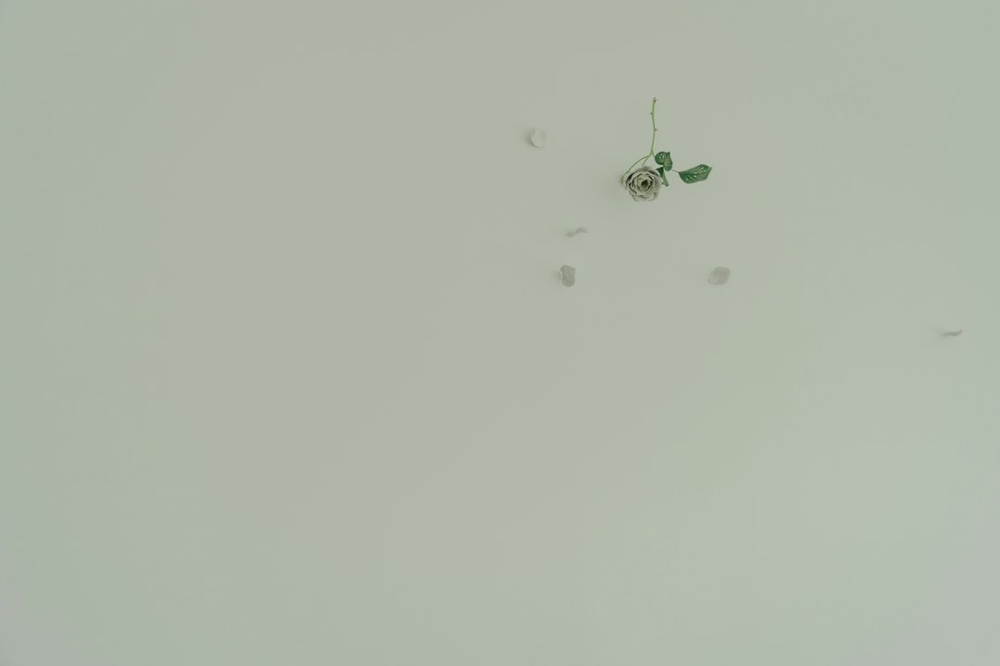

After the selected finish has been applied and allowed to dry, PopcornGone completes the ceiling with premium stain-blocking paint. Stain blocking is especially useful where an older ceiling has experienced discoloration. Professional painting also gives the ceiling a consistent final appearance.
Ceiling height, room configuration, existing paint, condition of the drywall, required ceiling repairs, selected texture, smooth finishing requirements, painting, and accessibility can change the scope. PopcornGone therefore provides free in-home estimates based on the individual property.
Popcorn ceiling texture was commonly installed in residential properties because it could create a finished appearance while concealing certain drywall imperfections. As interior design preferences have changed, many homeowners now prefer smoother and less heavily textured ceiling surfaces. Older popcorn ceilings can also accumulate dust within the texture and develop visible discoloration that can be difficult to address through routine cleaning.
PopcornGone provides a two-year warranty on labor and is fully licensed and insured. Warranty conditions can be discussed directly with the company before work begins.
Removing the popcorn texture exposes the drywall underneath. This surface may not be immediately ready for painting or new texture. Nail pops, drywall joints, small cracks, uneven areas, previous patches, stains, and other imperfections can become visible. PopcornGone provides ceiling repair and drywall repair to correct these areas before applying the new finish.
PopcornGone provides free in-home estimates to establish project-specific pricing. These appointments also give homeowners an opportunity to discuss the expected process, available finishes, repair work, scheduling, and warranty information.

When talking about popcorn removal Orlando, homeowners should consider the complete process rather than removal alone. Before scraping or sanding begins, the property needs to be prepared. PopcornGone uses protective coverings for floors, walls, furniture, and fixtures. Plastic containment barriers can isolate the work area, while HEPA filtration and vacuum-assisted equipment help minimize dust.
Professional popcorn removal Orlando can update individual rooms or multiple ceilings throughout an entire property. Removing old popcorn texture also creates an opportunity to inspect previously hidden drywall and complete repairs before a new finish is applied.
The removal method depends on the ceiling condition. Wet scraping can be effective on suitable popcorn ceilings that have not been heavily painted. Controlled amounts of water soften the texture so it can be carefully removed using appropriate tools. Painted popcorn ceilings may require different techniques because the paint can reduce moisture penetration.
Before removing ceiling material, the surrounding property must be protected. PopcornGone covers flooring, walls, furniture, and fixtures with appropriate protective materials. Plastic containment barriers and drop cloths help control debris, while HEPA filtration and vacuum-assisted equipment can reduce airborne dust generated during removal and sanding.
Call PopcornGone at 407-484-4264 for a free in-home estimate. The team can provide information about popcorn ceiling removal, finishing options, project pricing, scheduling, and the two-year labor warranty for Orlando homeowners considering an updated ceiling.
Older building materials can require additional assessment. Depending on the construction period of an Orlando home, testing may be appropriate to determine whether asbestos-containing material is present before the ceiling is disturbed. Property owners with older homes should discuss this consideration during their initial estimate.

Smooth finishes generally require more drywall preparation because there is little texture available to conceal surface irregularities. Skim coating can create a more consistent base before sanding. PopcornGone prepares the drywall according to the finish being applied rather than treating every ceiling identically.
After the new finish has dried, premium stain-blocking paint can be applied. Stain-blocking products are designed to reduce the likelihood of existing discoloration showing through the new painted surface. Careful paint application completes the updated ceiling.
The company also manages debris and cleanup associated with the work. Removed popcorn material is collected, project waste is taken away, and protective materials are removed after the appropriate stages have been completed.
For homeowners who want a complete service, PopcornGone manages preparation, popcorn ceiling removal, drywall repair, ceiling repair, texture application, smooth finishing, painting, and cleanup. Each stage contributes to the appearance and durability of the completed ceiling.
Contact PopcornGone at 407-484-4264 for a free in-home estimate. Orlando homeowners can receive project-specific information about popcorn removal, ceiling condition, finishing options, pricing, scheduling, and the company's two-year labor warranty.
A smooth finish usually requires extensive surface preparation. Skim coating can be used to cover imperfections and establish a consistent surface. Once dry, the joint compound is sanded and prepared for painting. This additional work helps produce the uniform appearance expected from a professionally finished smooth ceiling.
Once the popcorn ceiling has been removed, the underlying drywall can be inspected. This stage may reveal nail pops, visible drywall joints, uneven compound, stains, cracks, or previous repair work. PopcornGone provides professional drywall repair and ceiling repair to address these imperfections.
Professional cleanup is another part of popcorn ceiling removal. Ceiling texture creates substantial debris as it is removed. PopcornGone collects project waste, removes materials from the property, and cleans the working space after completion.
Homeowners researching popcorn removal Orlando frequently want to understand pricing before arranging work. General popcorn ceiling removal costs can fall between approximately $1.25 and $6.00 per square foot depending on project conditions. However, square footage alone cannot determine the complete price.